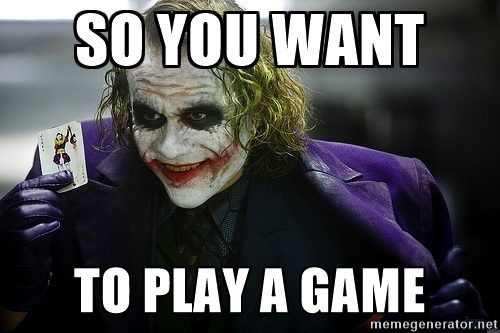

Deviation #1: This is wholly separate from the “should I get a Ph.D.” question. For that I would recommend one of numerous guides that ask all the right questions.
Deviation #2: This is also wholly separate from how to succeed in a Ph.D. program, though there is some overlap. In general, there are some key items to consider and habits to build as you work your way through a Ph.D., and for those questions I highly recommend Andrej Karpathy’s excellent survival guide to a Ph.D., some of which may be mirrored here.
No, the specific question I’m addressing here is how to succeed in graduate research as one of my students. In order of somewhat-importance:
1: Familiarize yourself with my research interests.
This may seem like a no-brainer, but you’d be surprised how many emails I get from individuals expressing profound interest in working with me, only to see they have i) no experience whatsoever in any of my interests (which isn’t necessarily a deal-breaker!), and ii) don’t appear to know what I work on (which is a deal-breaker). If you work with me, you’re going to do something at the intersection of bioimaging + distributed computing + biosurveillance; something that involves computer vision and machine learning in a public health setting.
Check out my Google Scholar record, my group’s GitHub repositories, and my lab website to get at least a basic idea of the sort of work I do, and to jog your thinking along the lines of what you might be able to contribute.
2: Take into consideration the following expectations.
Work hard, play hard, and be able to talk about both:
- I expect my students to develop into excellent scientific communicators. In practice, this means I want you to be able to talk about your work to experts in the same field, experts in different fields, and even non-scientists. I want you to get comfortable giving talks and writing papers. If English isn’t your first language, that’s ok! Just be aware this expectation may take more time than you think.
- I expect my students to participate in Open Science. In practice, this means I want you to publish all the code you write in public repositories, mirror all your papers on arXiv, participate in and contribute to open source projects, and maybe even contribute to a blog. Research is only interesting when you can pick through the code, explore the data, and regenerate the results. Know or learn how to use scientific notebooks, version control, wikis, and even containers!
- I expect my students to demonstrate a promising slope of accomplishment. Put simply, I recruit for potential (slope), not experience (y-intercept). You don’t have to know everything about machine learning, statistics, and linear algebra, and be an expert programming in Python just to be able to work with me. However, I do expect that you will be able to pick up these skills very quickly.
- I expect my students to take ownership of their projects, pushing the envelope of what is known and beyond what even I would suggest.
Speaking of which…
3: Prepare yourself to be a self-sufficient researcher.
This does NOT mean I expect you to do everything! The whole point of being a student is that you have a mentor, a supervisor who is (in theory) more experienced than you, from whom you can learn. It is indeed my job to guide you and teach you what I know, and I will most certainly do that.
This DOES mean that, by the end of your time here, I want you to be the expert on your project! You should take the project and run with it, rather than wait for me to tell you what to do next. Build your intuition about the problem through “moving fast and breaking things,” to use the tech startup parlance. Ask forgiveness rather than permission. Insert witticism here that basically says KEEP TRYING THINGS.
Even as you start your project, you may come across roadblocks that I don’t have an answer for. That’s how research works: we’re pushing the limits of our collective knowledge! I may have some intuition from previous problems, and I’ll certainly share that, but asking me “What do I do next?” is going to frustrate both of us very, very quickly.
Here’s another example: the levels of data science classes. You don’t have to be anywhere above Level 2 when you arrive (maybe you’re still working your way through Level 1!), but I expect you to work through Level 7 by the time you leave.
If you’ve made it this far, and are still interested…
…then I encourage you to reach out to me and express your interest! I have just a few final pieces of advice:
First, read this brief Twitter thread and this brief Twitter thread as well.
Next, do NOT send me
- a form email with a 10-page summary of your accomplishments (as I said, I don’t hire for y-intercept, I hire for slope)
- an email with misspellings or grammatical errors (recall that I emphasize good scientific communication skills)
- a message that starts with “Dear Ms Quinn” (first, I’m a doctor; second, I’m a guy)
I won’t respond.
Finally, write an email that’s 3-5 sentences at most, with a specific mention of the work you find interesting and want to pursue further. For extra credit, mention some kind of improvement or extension to the work that you came up with on your own. This tells me a lot of things all at once, most important of which is that you’re serious about wanting to work with me.
Because if you can handle graduate school…
…I really do believe you can handle anything.